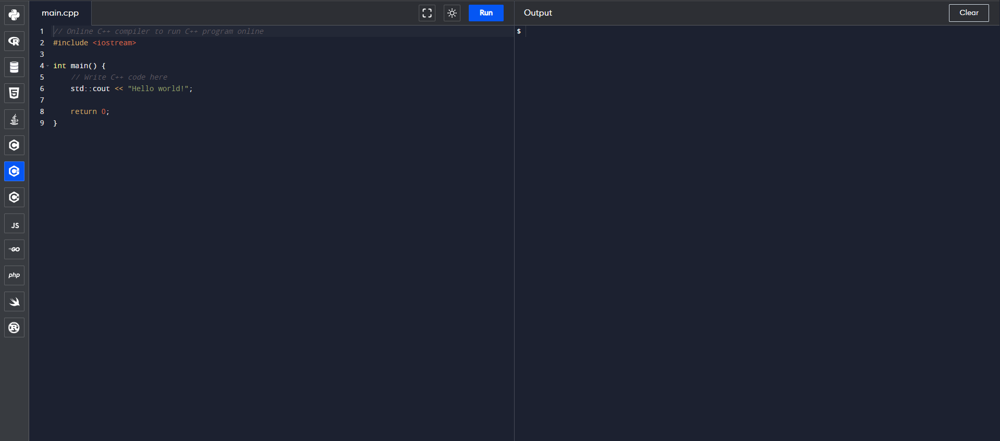
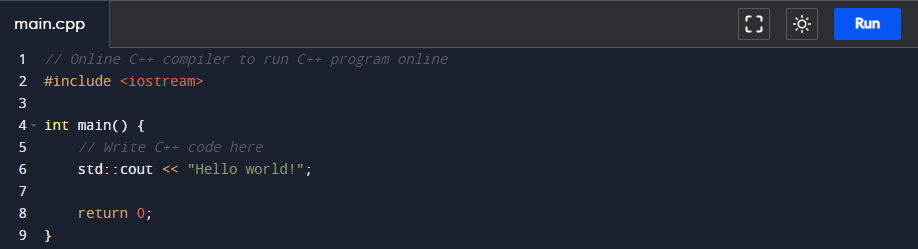
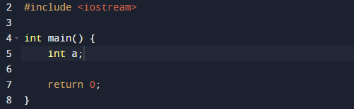
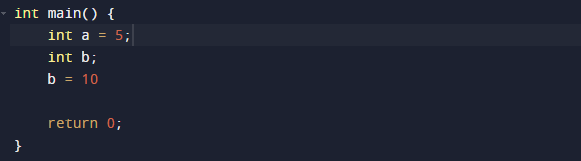
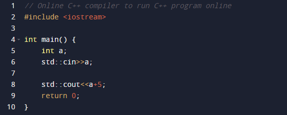
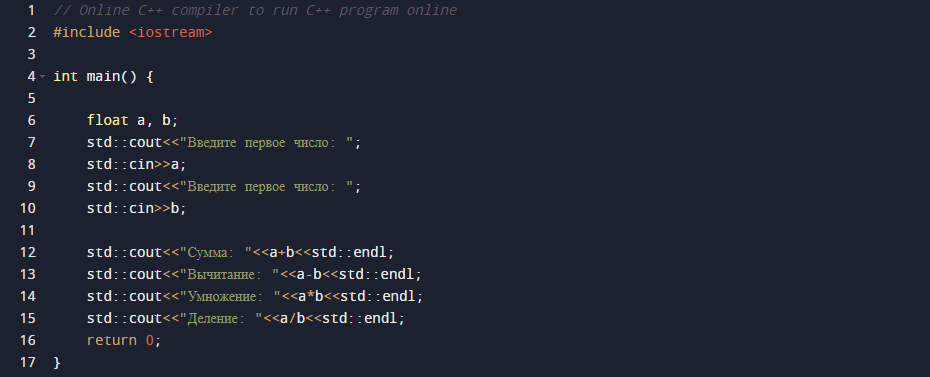
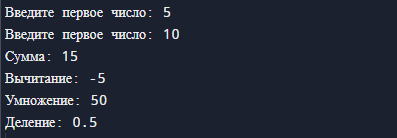

Содержание урока
Введение
C++ - компилируемый статически-типизированный объектно-ориентированный язык общего назначения. Создавался во времена большой популярности языка C, с целью добавить улучшить и добавить в него объектно-ориентированное программирование. Использует в системном программировании, программировании микроконтроллеров, разработке игр. Многие фундаментальные инструменты написаны на C++: веб-сервера, операционные системы, компиляторы, игровые движки и т.д.

Видео-урок
Начало работы
Для написания кода на C++ нам также понадобиться редактор кода и компилятор. Самым популярным компилятором для C++ является GCC (GNU C Compiler), который является также и компилятором для C. Для написания кода чаще всего используют VSCode, Visual Studio или CLion. Но в случае, если вы не хотите устанавливать компилятор и редактор кода на свой компьютер, можно воспользоваться онлайн версией среды разработки. Именно этот вариант мы рассмотрим.
Перейдя по ссылке вы попадете на сайт онлайн среды разработки
В левой части интерфейса находится редактор кода. В правой части интерфейса находится консоль для ввода значений и вывода результата программы
Первый код
При заходе на сайт, в редакторе кода уже будет находится базовый код программы на C++. Рассмотрим этот код более подробно:
#include <iostream> - строка отвечающая за подключение функционала ввода вывода в нашу программу. Оператор include отвечает за подключение модулей, а <iostream> является названием модуля
int main() - заголовок главной функции, которая является точкой входа в программу, поэтому весь исполняемый код должен находится внутри этой функции
std::cout<<"Hello, World!"; - команда для вывода переданной строки в консоль. В данном случае выведется строка "Hello, World!"
return 0; - команда для завершения функции и возвращения значения. Значение 0 означает, что программа была закончена успешна. Так как, этот код завершает главную функцию, то весь код должен выполняться до команды return, иначе он просто не будет выполнен
Переменные и простые математические операции
Переменная - это зарезервированное пространство в памяти компьютера, которое хранит какое-либо значение и имеет свой индетификатор, который позволяет обращаться к хранимому значению. Для создания переменной в C++ необходимо указать тип данных, которые будет хранить переменная и идентификатор переменной.
Но такая переменная не имеет значения. Для этого необходимо иницилизировать переменную (присвоить ей значение). Это можно сделать сразу же при объявлении переменной, или отдельной командой позже:
Список базовых типов данных:
int - целочисленное значение
float - дробное значение
bool - логическое значение
char - символьное значение
В C++ также имеются базовые операторы арифметики:
Оператор суммы (+)
Оператор вычитания (-)
Оператор умножение (*)
Оператор деления (/)
Оператор вызова ввода и создание примитивного калькулятора
Оператор вызова ввода позволяет предоставить пользователю возможность ввести данные пользователю. Для этого используется оператор std::cin:
Данная программа примит введенное число от пользователя и выведет сумму введенного числа и 5
Теперь создадим программу, которая будет принимать два числа от пользователя и выводить результаты суммы, разности, умножения и деления эти чисел
Результат программы
Тест
C++ является -
Код программы C++ должен находиться:
Какого типа данных нет в C++?
Какой оператор используется для вывода строки в терминал?
Какой оператор используется для вызова ввода?